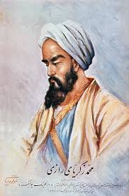

Présentation
Abu Bakr Muhammad ibn Zakariya al-Razi, connu en Occident sous le nom de Rhazès, était un médecin, alchimiste et philosophe perse, considéré comme l'un des plus grands médecins du monde médiéval.
| Nom complet | Abu Bakr Muhammad ibn Zakariya al-Razi |
| Dates | 865 - 925 |
| Lieu de naissance | Ray, Iran |
| Domaines | Médecine, Chimie, Philosophie |
| Innovation principale | Pédiatrie et distinction variole/rougeole |
🎯 Découvertes Médicales
- Pédiatrie - Premier traité de médecine des enfants
- Maladies infectieuses - Distinction entre variole et rougeole
- Allergies - Première description du rhume des foins
- Psychologie médicale - Influence de l'esprit sur le corps
- Médecine expérimentale - Tests sur les animaux
🏥 Contributions Hospitalières
Al-Razi a été directeur de l'hôpital de Bagdad et a instauré des méthodes modernes de diagnostic et de traitement.
👶 Pédiatrie
Soins spécialisés pour les enfants
🔬 Diagnostic
Méthodes d'observation clinique avancées
📚 Enseignement
Formation de générations de médecins
📖 Œuvres Majeures
Son "Kitab al-Hawi" (Comprehensive Book of Medicine) en 25 volumes a été une référence médicale pendant des siècles en Europe.